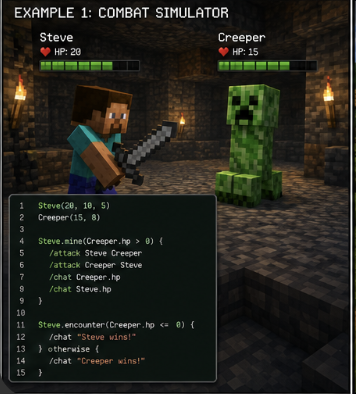
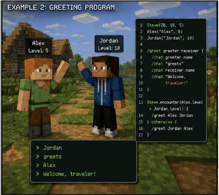
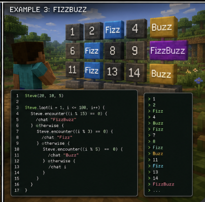

Example 1: Combat Simulator
This program creates Steve and a Creeper, then uses a combat loop to attack until the Creeper's HP reaches zero. It demonstrates object creation, while-loop behavior, slash commands, automatic damage calculation, and if/else logic.

Steve(20, 10, 5)
Creeper(15, 8)
Steve.mine(Creeper.hp > 0) {
/attack Steve Creeper
/attack Creeper Steve
/chat Creeper.hp
/chat Steve.hp
}
Steve.encounter(Creeper.hp <= 0) {
/chat "Steve wins!"
} otherwise {
/chat "Creeper wins!"
}What this demonstrates
Steve(20, 10, 5)creates the main player with HP, attack, and armor.Creeper(15, 8)creates a mob with HP and attack.Steve.mine(...)works like a while loop./attackhandles combat and HP changes.Steve.encounter(...)works like an if statement.
Expected Output
[MineScript] Steve has entered the world.
Creeper HP: 5
Steve HP: 17
Creeper HP: 0
Steve HP: 14
Steve wins!Example 2: Greeting Program
This program creates optional player objects and defines a custom slash command called
/greet. It uses a conditional to decide which player should greet the other.

Steve(20, 10, 5)
Alex("Alex", 5)
Jordan("Jordan", 10)
/greet greeter receiver {
/chat greeter.name
/chat "greets"
/chat receiver.name
/chat "Welcome, traveler!"
}
Steve.encounter(Alex.level > Jordan.level) {
/greet Alex Jordan
} otherwise {
/greet Jordan Alex
}What this demonstrates
- Optional player objects with names and levels.
- Dot notation such as
Alex.levelandJordan.level. - User-defined slash commands.
- Function parameters through
greeterandreceiver. - Conditional execution using
Steve.encounter.
Expected Output
[MineScript] Steve has entered the world.
Jordan
greets
Alex
Welcome, traveler!Example 3: FizzBuzz
This program solves the classic FizzBuzz problem using MineScript syntax.
It demonstrates Steve.loot as a for loop, nested conditionals,
modulo operations, and terminal output.

Steve(20, 10, 5)
Steve.loot(i = 1, i <= 100, i++) {
Steve.encounter((i % 15) == 0) {
/chat "FizzBuzz"
} otherwise {
Steve.encounter((i % 3) == 0) {
/chat "Fizz"
} otherwise {
Steve.encounter((i % 5) == 0) {
/chat "Buzz"
} otherwise {
/chat i
}
}
}
}What this demonstrates
Steve.loot(i = 1, i <= 100, i++)behaves like a for loop.%is used for modulo checks.- Nested
Steve.encounterblocks create if/else-if logic. /chatprints numbers or strings to the terminal.
Expected Output
[MineScript] Steve has entered the world.
1
2
Fizz
4
Buzz
Fizz
7
8
Fizz
Buzz
11
Fizz
13
14
FizzBuzz
...Example 4: Full Story Program
The repository also includes a larger story program. This example is meant to show the long-term vision for MineScript: writing code that behaves like a playable Minecraft-style adventure.
python3 minescript.py story.msThe story program is the best candidate for the storyboard/image-generation feature because it can produce a sequence of events that can be turned into comic-style panels.
Source Files
The full interpreter and sample programs are available in the GitHub repository.